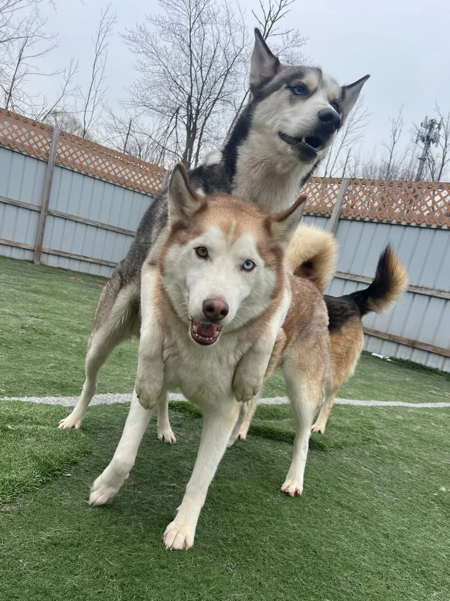

DALLAS & BENJI · THE SPIRIT BEHIND DEPLOYANYWAY
Two huskies. An unreasonable amount of possibility.
Keep wondering. Keep making. Leave room for zoomies.
Dallas and Benji are our fun-loving, high-energy huskies. They inspire the heart of DeployAnyway: approach the world with curiosity, bring your whole enthusiasm to an adventure, and remember that enjoying yourself is a worthwhile part of the day.



The adventure begins with “What’s over there?”
Picture a fork in a trail through a husky’s eyes. One direction is familiar. The other offers something to investigate. There’s a pause, a curious nose, an unreasonable amount of enthusiasm—and suddenly the detour feels like the point.
That little imagined adventure captures the spirit Dallas and Benji bring to this project. Curiosity makes familiar things interesting. Play turns an ordinary moment into something memorable. Mischief supplies the occasional question nobody sensible thought to ask.
And the zoomies? A reminder that joy doesn’t need a business case.
We recognize that feeling at a keyboard.
Think back to something you made just because you wanted to see whether you could. A tiny script. A strange little website. An experiment that kept you up because the next idea was too interesting to leave alone.
You followed a question. You tried something. It broke. You learned. Then it worked, and for a moment the whole thing felt like possibility.
That’s passion in its everyday form: caring enough to keep going. Creativity is giving an unusual idea a chance. Curiosity is being willing to discover that your first answer was wrong. Fun is the part that makes you want to come back tomorrow.
Professional life has plenty of tickets, deadlines and serious conversations. We want developers to keep a little room for that original spark, too.
Make useful things. Enjoy the making.
DeployAnyway is our way of carrying that spirit into everyday development. Small open-source tools can save a little effort, make a failure easier to understand, or bring a smile to a long debugging session. They can have a personality and still deserve care.
Our motto is a wink: “Software nobody requested, built with questionable priorities, and shipped with absolute confidence!” The purpose underneath it is sincere. Follow the interesting idea. Share what you make. Treat people’s time and trust with respect.
Put the mischief into a character, a phrase, or an unexpected experiment. Check the actual result. Preserve failures. Say what you know and what you don’t. Leave the next person something useful to work with.
Dallas and Benji supply the reminder: bring your energy, stay interested, and let yourself enjoy the adventure.
There’s room for your curiosity here.
Maybe you have a character idea, a developer frustration worth fixing, or a wonderfully odd use for one of these tools. We’d like to hear about it. Try something, ask a question, share an idea, or make a small contribution.
Bring us your bug, idea or little bit of mischief →